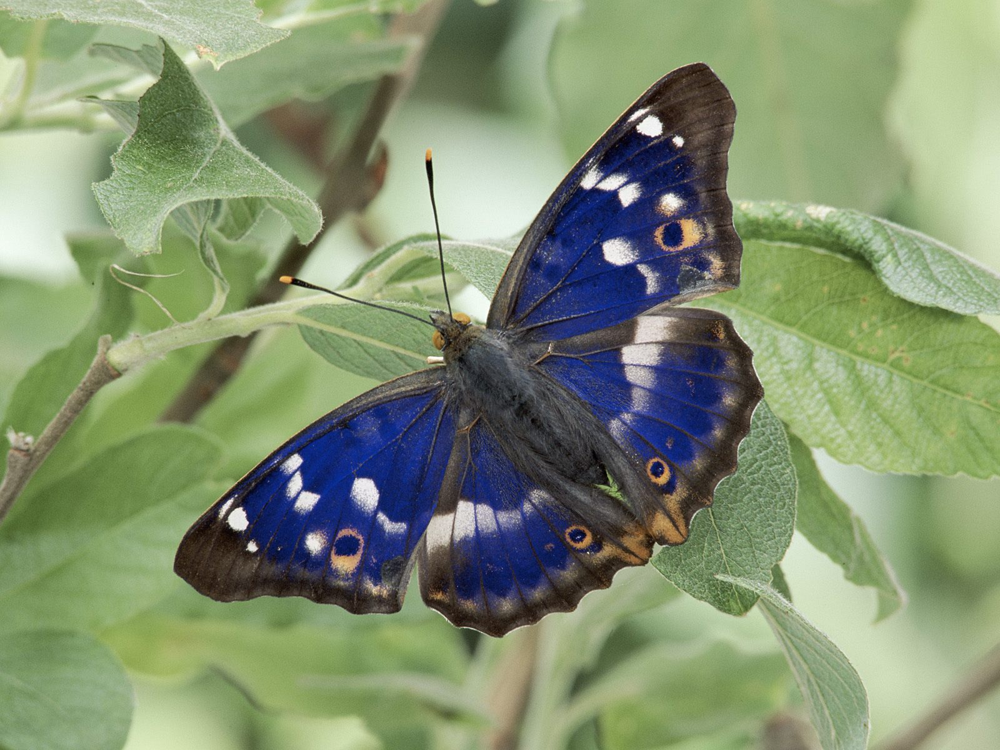

Nome científico: iris apatura

Apatura iris é uma borboleta da Eurásia da família Nymphalidae. Os adultos têm asas marrom escuro com faixas e manchas brancas, além de um pequeno anel laranja em cada uma das asas posteriores. Os machos têm uma envergadura de 70-80 milímetros, um brilho azul púrpura iridescente e são ligeiramente maiores que as fêmeas. As lagartas são verde com branco e marcas amarelas, têm dois grandes ‘chifres’ na extremidade anterior e um menor na porção posterior.
As fêmeas passam a maior parte de suas vidas na copa das árvores, em densos bosques de carvalho, descendo apenas para colocar seus ovos nos pequenos arbustos amarelados que crescem em clareiras. Os machos gastam a maior parte de seu tempo nas copas das árvores, defendendo seu território de rivais, embora, por vezes, desça para sugar minerais em poças. Diferente da maioria das borboletas, o imperador roxo não é alimentado a partir de flores, mas em vez disso, dos dejetos segregados por pulgões, seiva escorrendo das árvores de carvalho, esterco, urina e cadáveres de animais em estado avançado de decomposição.
E alguns países, machos são atropelados ao atravessar as ruas voando.
Após a eclosão, as larvas se encontram ao longo da nervura central da folha onde ficam bem camufladas, e alimentam apenas à noite. Durante o inverno eles hibernam nos galhos, onde mudam de cor, de verde para marrom para combinar com seu substrato.
Apatura íris é amplamente distribuída nos densos bosques em toda a Europa Central, incluindo sul da Grã-Bretanha, e em partes devidamente temperadas da Ásia, incluindo a China central e ocidental. Diferentes subespécies são encontradas nessas regiões.
Na Inglaterra vitoriana esta espécie foi considerada muito comum no sul do país, mas desde então, passou por um acentuado declínio territorial e populacional. Este declínio começou na primeira parte do século XX, e na década de 1960 era relativamente escassa, sendo confinada a antigos bosques de plantas folhosas em poucos municípios no sudeste da Inglaterra.